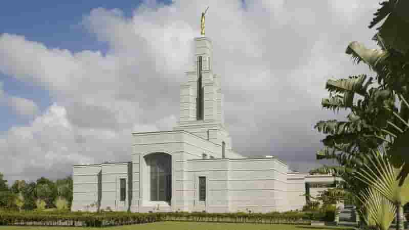

Acra Gana
Templos da Igreja de Jesus Cristo dos Santos dos Últimos Dias

Sobre o Templo
O Templo de Acra Gana possui grande relevância histórica: ele foi o primeiro templo construído na África Ocidental e o segundo em todo o continente.
Data de Dedicação: 11 de janeiro de 2004, realizada pelo Presidente Gordon B. Hinckley.
Informações para Visitação
- Localização: 57 Independence Ave, North Ridge, Acra, Gana.
- Horários: Verifique a programação de ordenanças.
- Telefone: +233 21-650-009
- Acomodações: Disponíveis.